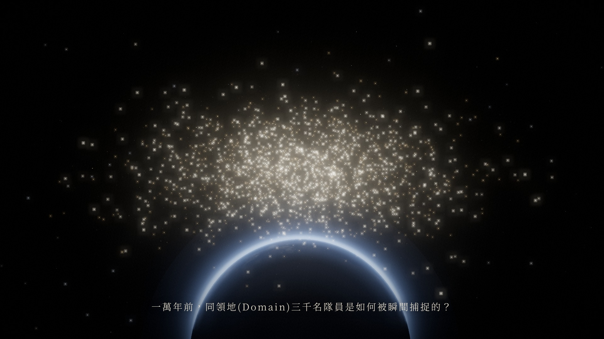
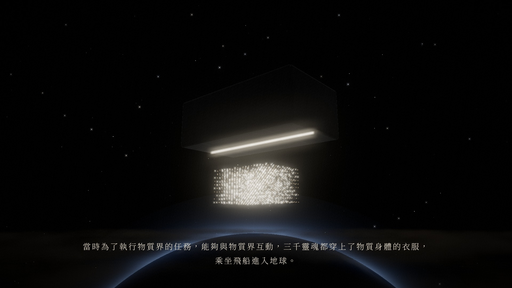
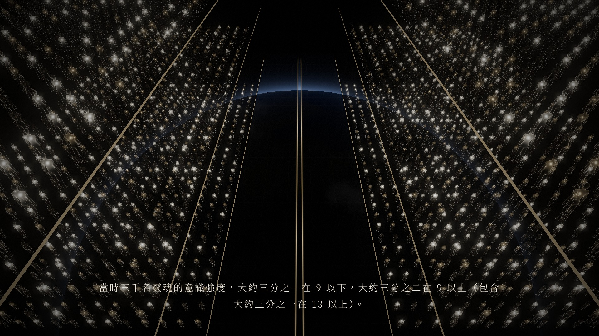
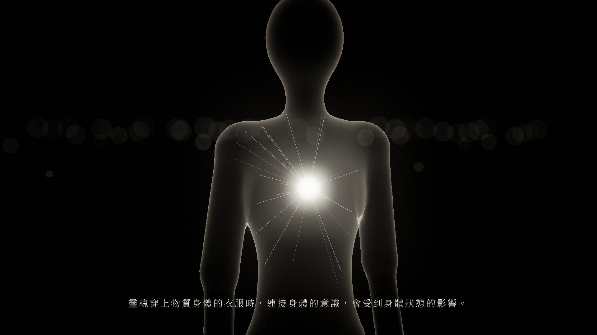
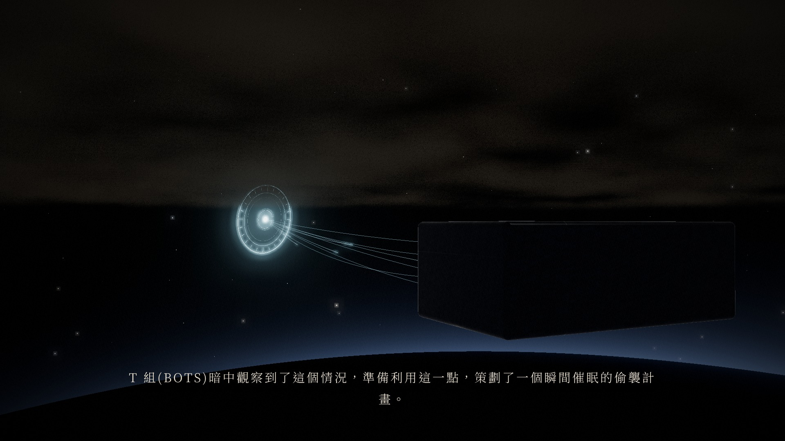

原文第一段五句，每句一个镜头。全部由同一份代码按时间 t 渲染：1920×1080，ACES 色调，辉光，胶片颗粒。V0.2 把地球的弧形辉光加进 S1、S2、S3、S5，景别从远到近；S3 改为俯拍半透明船舱。确认后再做 52 秒动态视频和交互版。

一萬年前，同領地(Domain)三千名隊員是如何被瞬間捕捉的？

當時為了執行物質界的任務，能夠與物質界互動，三千靈魂都穿上了物質身體的衣服，乘坐飛船進入地球。

當時三千名靈魂的意識強度，大約三分之一在 9 以下，大約三分之二在 9 以上（包含大約三分之一在 13 以上）。

靈魂穿上物質身體的衣服時，連接身體的意識，會受到身體狀態的影響。

T 組(BOTS)暗中觀察到了這個情況，準備利用這一點，策劃了一個瞬間催眠的偷襲計畫。